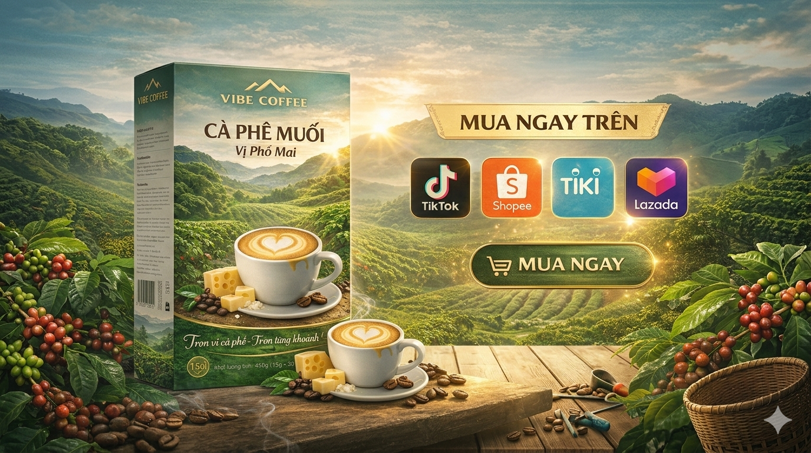

Bạn đang tìm một món quà vừa đậm chất Việt, vừa dễ uống với người nước ngoài? Cà phê Việt Nam luôn là lựa chọn tuyệt vời. Nhưng thay vì cà phê truyền thống đôi khi quá mạnh hoặc khó pha, VIBE Coffee mang đến một hướng đi mới: cà phê muối – một “vibe” rất Việt, nhưng được tinh chỉnh để ai cũng có thể thưởng thức.
Vì sao cà phê Việt là món quà hoàn hảo?
Mang theo cả văn hóa Việt
Cà phê không chỉ là đồ uống, mà là một thói quen, một nhịp sống và một trải nghiệm rất riêng của người Việt. Tại VIBE Coffee, chúng tôi đóng gói trải nghiệm “vibe Việt” trong từng sản phẩm để người nhận có thể cảm nhận sự ấm áp và chăm sóc từ dáng vẻ đến khẩu vị.
Đậm đà nhưng đầy sáng tạo
Cà phê Việt nổi tiếng mạnh mẽ, nhưng điều khiến người nước ngoài ấn tượng hơn là cách chúng ta sáng tạo với cà phê – và cà phê muối chính là một ví dụ điển hình.
- Vị mặn nhẹ làm dịu vị đắng, dễ tiếp cận với những ai chưa quen.
- Hậu vị béo, sâu và dễ nghiện; mỗi ngụm là một câu chuyện mới.
Điều gì làm VIBE Coffee khác biệt?
Thay vì giữ nguyên cách pha truyền thống, VIBE Coffee tập trung vào 3 yếu tố để quà tặng thật sự ghi dấu:
- Dễ uống hơn: độ gắt được cắt bớt, vị cân bằng để phù hợp cả người mới uống cà phê.
- Tiện lợi hơn: gói tinh gọn, không cần kỹ thuật phức tạp, phù hợp lifestyle hiện đại.
- Trải nghiệm cảm xúc (VIBE): mỗi sản phẩm gợi một “mood” – nhẹ nhàng, thư giãn hoặc bùng nổ năng lượng.
Gợi ý quà tặng từ dòng cà phê muối VIBE
Cà phê muối nguyên bản – Signature VIBE
Đậm vị cà phê Việt, kết hợp vị mặn nhẹ độc đáo và hậu vị tròn, dễ nhớ. Phù hợp với người muốn trải nghiệm “chất Việt” rõ nét nhất.
Cà phê muối phô mai – Béo & gây nghiện
Vị béo nhẹ của phô mai làm mềm vị cà phê để người nước ngoài dễ uống ngay từ lần đầu. Lựa chọn lý tưởng cho người mới bắt đầu hoặc không quen vị đắng.
Cà phê muối Cappuccino dừa – Tropical & trendy
Kết hợp cà phê + dừa + cappuccino mang vibe nhiệt đới, rất “Việt Nam”. Hương thơm dễ gây ấn tượng và dễ viral khi làm quà.
Phù hợp với người cần một trải nghiệm quà tặng khác biệt và gợi sự tò mò.
Vì sao VIBE Coffee là lựa chọn quà tặng tốt hơn?
So với cà phê truyền thống:
- ❌ Khó pha
- ❌ Khó hợp khẩu vị
- ❌ Thiếu yếu tố mới lạ
VIBE Coffee giải quyết hết:
- ✅ Dễ uống
- ✅ Dễ mang đi
- ✅ Có câu chuyện
- ✅ Có trải nghiệm
Lời kết
Một món quà đáng nhớ không chỉ vì ngon, mà vì nó mang lại cảm xúc. Với VIBE Coffee, bạn không chỉ tặng cà phê — bạn đang gửi đi một “vibe” của Việt Nam: hiện đại, sáng tạo và đầy bản sắc.
Xem thêm các bài viết chuẩn SEO: Cà phê chuẩn vị Việt – khi “vibe” cà phê trở thành trải nghiệm • Cà phê hòa tan là gì? Bí quyết chọn loại ngon cho gia đình.
Thích set quà hơn? Khám phá sản phẩm tại trang sản phẩm hoặc nhắn team qua liên hệ.